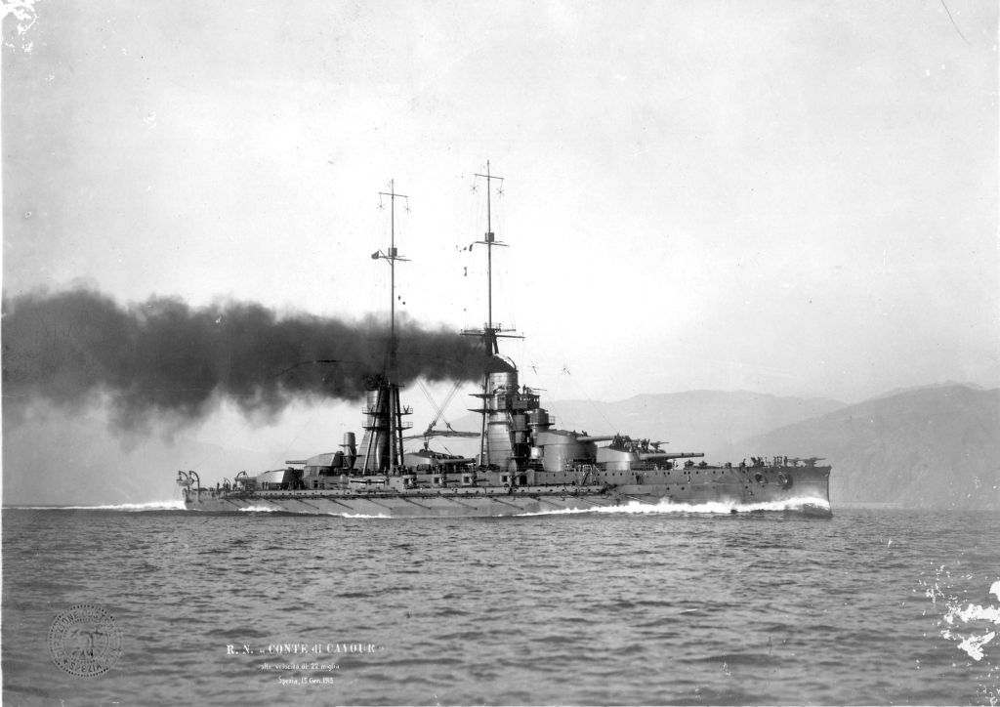
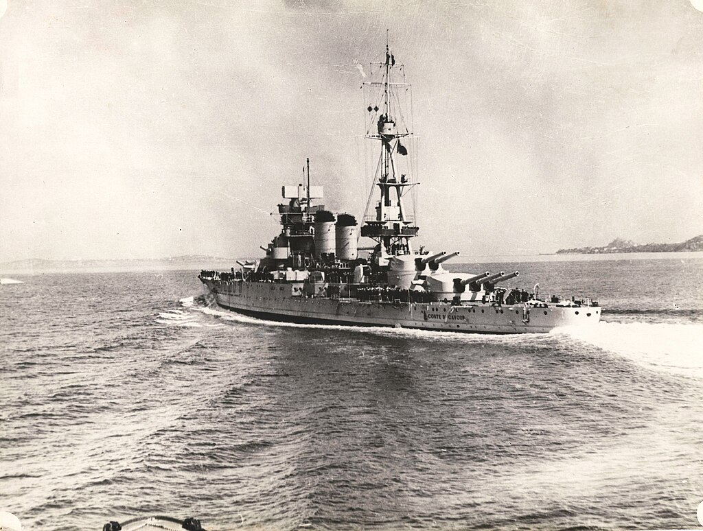
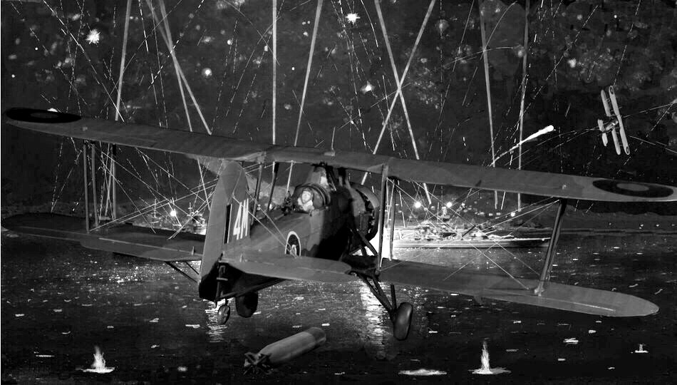
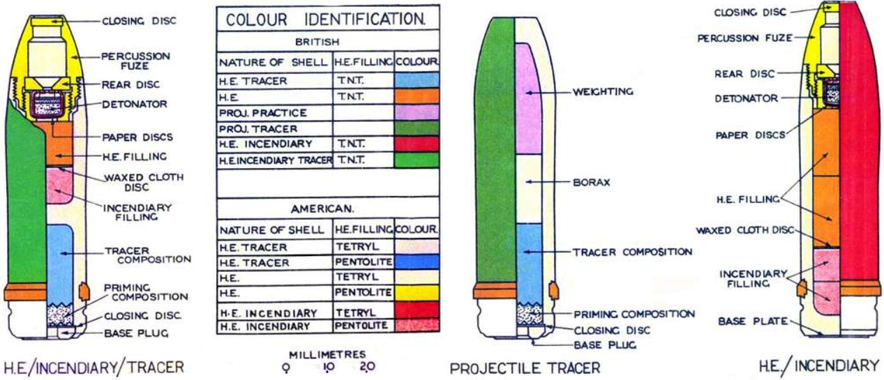

WW2 중 항모에서의 야간 작전 (22) - 안전벨트와 크리스마스 트리
게시: 2025-07-17T06:30:52+09:00
<남자라면 안전벨트 따위는 하지 않는다> HMS Illustrious에서 타란토로 출격할 조종사들과 항법사들의 최종 브리핑 때, 작전 장교인 George Beale 중령은 공격 대상인 전함과 항만 시설에 대해 정말 깨알 같이 자세하게 일일이 설명. 그게 너무 길고 지루했는지, 빌 중령이 '귀환 비행에 대해서는...'이라고 말하자 콜사인이 'Blood'였던 Scarlett 대위는 '그딴 거 이야기에 소중한 시간을 낭비하지 맙시다!'라고 큰 소리로 외쳐 모두를 웃게 만들었음. 그리고 말이 씨가 된다고, 스칼렛 대위에게는 정말 귀환 비행이 필요 없었음. 스칼렛 대위는 제1차 공격대의 선두 편대장이었던 Williamson 소령의 항법사. 선두의 조명탄 소드피쉬들이 임무를 완수하여 조명을 밝히자, 이어서 윌리엄슨은 그의 편대기 2대를 이끌고 1.5km 상공에서 엔진 출력을 최소한으로 줄이고 해면 10m 위로 부드럽게 강하. 엔진 출력을 거의 idle 상태로 줄인 이유는 이렇게 하면 엔진 소리가 매우 작아지니까 혹시 어둠 속에서 이탈리아군이 소드피쉬들의 접근을 눈치채지 못할 수도 있을 거라고 기대했기 때문. 그러나 이탈리아군도 바보가 아니었기 때문에, 적어도 구축함 Fulmine는 달빛 속에서 똑바로 내려오는 소드피쉬들을 똑똑히 보고 있었음. 풀미네는 약 1km 거리에서 윌리엄슨과 스칼렛이 탄 소드피쉬에 대고 맹렬한 대공포 사격을 가했는데, 느린 소드피쉬도 의외로 맞추기 어려워 윌리엄슨이 매우 낮은 고도, 해면 위 6m 높이에서 전함 카부르(Conte di Cavour)를 향해 어뢰를 투하할 때까지 맞추지 못함. 그러나 어뢰를 투하하자마자 윌리엄슨의 소드피쉬는 바다에 처박혔는데, 이것이 대공포에 맞아서인지 윌리엄슨이 너무 낮은 고도까지 내려가는 바람에 날개가 해면에 살짝 닿았기 때문인지는 불분명.

(이들의 타겟이 된 전함 Conte di Cavour (Count of Cavour, 카부르 백작)은 1911년 진수된 꽤 낡은 전함으로서, 원래 저렇게 3연장 포탑 3개와 2연장 포탑 2개, 총 5개 포탑 13문의 12인치 함포를 갖추었고, 배수량 2만2천톤에 속력은 22노트.)

(카부르는 1933년부터 4년간 대규모 현대화 작업을 거쳐 선수부를 연장하는 등 길이와 깊이, 폭 등이 모두 더 커졌고, 증기 터빈과 프로펠러 샤프트, 보일러 등을 모두 신형으로 교체. 또 맨 중앙의 3연장 포탑은 제거하고 대신 기존 4개 포탑의 구경을 12.6인치로 약간 향상시킴. 결과적으로 2만9천톤에 27노트로 배수량과 속력이 향상됨. 아울러 부포 등도 교체하여 대공사격 능력도 대폭 향상. 이 사진은 1938년의 모습.) 아무튼 이들은 이 공습의 첫 희생자가 될... 뻔 했으나 놀랍게도 물 속에서 스칼렛 대위가 뛰쳐나옴. 스칼렛 대위는 '난 절대 안전벨트 따위는 매지 않아'라는 상남자였기 때문에 (어차피 소드피쉬는 느린 복엽 폭격기였으므로 매버릭처럼 배면 비행을 할 일이 없었으므로 그러고도 그때까지 별 이상이 없었다고), 소드피쉬가 수면에 부딪힐 때 그만 좌석에서 튕겨나와 물 속에 빠졌던 것. 안전벨트를 매지 않은 것이 안전에 도움이 되었던 매우 희귀한 사례. 한편, 수칙에 따라 안전벨트를 잘 하고 있었던 윌리엄슨 소령은 소드피쉬와 함께 물 속으로 꼬로록 했을까? 기본적으로 내부에 빈 공간이 많은 항공기는 물에 떨어져도 당장은 떠 있음. 두랄루민 뼈대에 캔버스 천을 입힌 가벼운 항공기인 소드피쉬는 당연히 더 오래 떠있었음. 다행히 윌리엄슨 소령도 안전벨트를 풀고 바다에 뛰어내려 스칼렛 대위와 합류. 이들이 머리 부분부터 서서히 가라앉는 자신들의 소드피쉬를 바라보는 사이 이탈리아 해군이 그 소드피쉬에 대고 기관총을 쏘아댐. 깜놀한 이들은 허겁지겁 헤엄을 쳐서 인근의 부유식 도크로 위로 올라가 한숨을 돌림. 부유식 도크에 나란히 앉은 이들이 가장 궁금해했던 것은 자신들이 투하한 어뢰가 과연 카부르를 명중시켰을까 하는 점. 카부르는 저기 보였으나 겉으로 봐서는 저게 어뢰를 맞고 물이 콸콸 새는 중인지 어떤지 알 수가 없었던 것. 이들은 나중에 자신들을 체포하러 온 이탈리아 병사들이 우울한 얼굴을 하고 있는 것을 보고서야 자신들의 공격이 꽤 큰 타격을 준 것을 짐작. <불타는 양파> 일찌감치 조명탄을 투하하고 이제 남은 폭탄으로 유류 창고를 폭격하러 가야 했던 램(Charles Lamb) 대위는 훨씬 위쪽 상공의 어둠 속에 있었고, 그래서 그를 향해서는 아무도 대공포를 쏘지 않았음. 덕분에 그는 자신의 표현에 따르면 '여태까지의 모든 임무들 중에서 가장 안전하고 편안'했으며, 저 아래 쪽에서 어뢰를 투하하려는 동료들을 내려다볼 수 있었음. 빨갛고 노랗고 하얀 온갖 종류의 예광탄들이 무시무시하게 동료들에게 퍼부어지는 모습을 보며, 램 대위가 한 생각은 '내 동료들은 아무도 살아남지 못하겠네' 라는 것. 그러나 전에 언급한 대로, 어뢰를 투하하려는 소드피쉬들은 의외로 직접적인 사격을 받지는 않았음. 반원형의 항만 안쪽에 이미 침투하여 어뢰 투하를 위해 초저공으로 날고 있었기 때문에, 해안의 대공포든 전함과 구축함에서 쏘아대는 대공포이든 이들을 조준하여 쏘았더니 맞은 편의 상선들이 피격되는 모습이 보였기 때문. 질겁을 한 이탈리아 대공포수들은 곧 조준을 높였고, 결국 대부분의 포탄은 머리 위로 지나가 버림. 다만 조종사들에게 이 대공포화는 심리적인 위협을 주었고, 특히 밀폐형 조종석이 아니라 창문도 없는 노출형 조종석에 앉았던 소드피쉬 조종사들은 예광탄이 날아가며 남기는 매캐한 화약 냄새까지 그대로 맡아야 했으므로 꽤 겁이 났다고. 그 냄새 때문인지 조종사들은 이 예광탄들을 'flaming onion' (불타는 양파)라고 불렀음.

여기서 궁금한 점은 왜 예광탄들이 다양한 색상을 가지고 있었을까 하는 점. 당시엔 대공포 종류와 구경에 따라 각각 다른 색상의 예광탄을 써야 저기 날아가는 포탄이 내가 쏜 것인지 내 옆에서 쏜 것인지 구분할 수 있었기 때문. 또 소드피쉬 조종사들이 '크리스마스 트리 같았다'라고 할 정도로 인상적이었던 이탈리아군의 화려한 예광탄은 적 조종사들에게 심리적 압박감을 실제로도 주었음. 가만 보면 소드피쉬 조종사들이 목격한 예광탄 중에는 파란색은 안 보이는데, 실제로 파란색은 예광탄에 거의 안 쓰임. 이유는 어둠 속에서 잘 안보이기 때문. 특히 빨간색 계열이 많이 사용되는데, 그 이유 중 하나가 적에 대한 심리적 효과 때문이기도 함.

(예광탄의 원리는 탄두 바닥면에 붙여 놓은 화학물질이 약실에서 장약이 폭발할 때 점화되어 비행 중에 조금씩 타들어 가면서 불빛을 내는 것. 거기 어떤 화학물질을 쓰느냐에 따라 다양한 색깔을 내는데, 가령 가장 흔한 빨간색은 질화 스트론튬(strontium), 초록색은 질화 바륨(barium), 하얀색은 마그네슘 또는 알루미늄 화합물을 쓴다고. 이렇게 말하면 간단한 것 같지만 예광탄도 나름 고민할 점이 많은 무기. 가령 아무래도 별도의 화학물질을 달아놓았으니 무게가 일반 탄두에 비해 다르므로, 눈에 보이는 예광탄의 탄도는 일반탄의 탄도와 아주 약간이지만 다를 수 있으므로 그걸 최소화하기 위해 고려할 점도 있고, 또 예광탄의 뜨거운 화학물질이 그걸 쏘는 포신에 손상을 입힐 수 있다는 점 등도 고려해야 함. 그래서 일반적으로 기관포의 경우 5발 중 1발을 예광탄으로 넣는 것이 일반적. 한 발씩 쏘는 탱크포의 경우 모든 탄이 예광탄이라고. 그래야 한 방 쏘고 그 탄도를 눈으로 본 뒤 수정할 수 있기 때문. 반면 역시 한 발씩 쏘는 해군 함포는 예광탄이 없는데, 그 이유는 사격 통제 레이더에서 그 포탄의 탄도를 추격할 수 있기 때문. 예광탄은 아군 눈에도 보이지만 적군 눈에도 보이므로 굳이 아군 위치를 드러내는 예광탄은 가능하면 쓰지 않는 것이 좋음. 그래서 요즘엔 특수 광학 고글을 쓴 아군 눈에만 보이는 특수 화합물을 쓴 예광탄도 개발되었다고 함.)